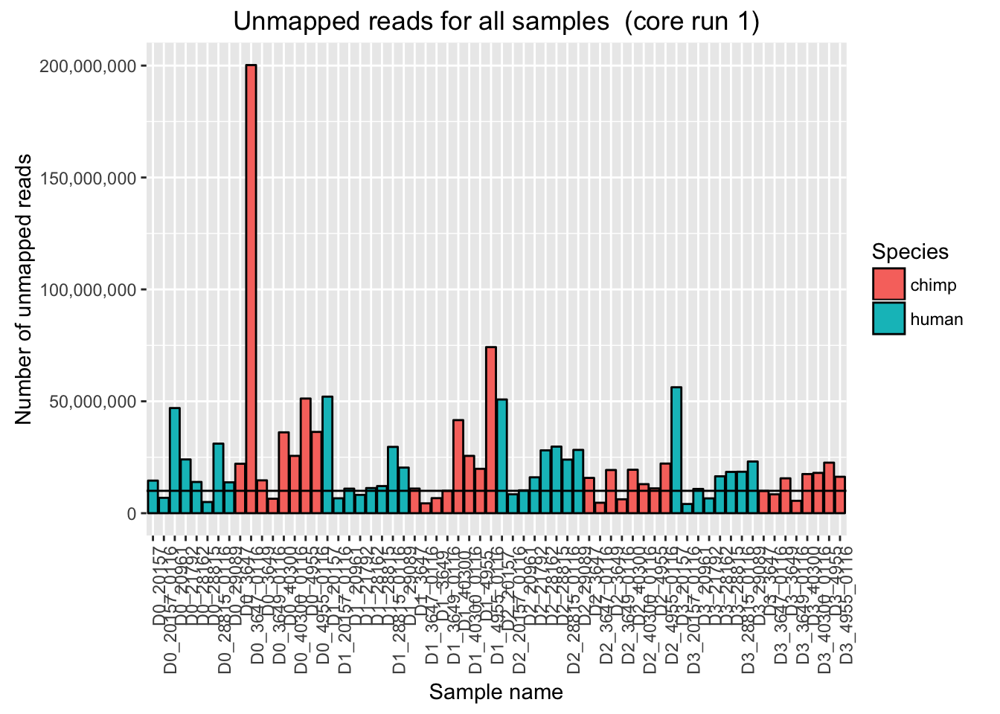
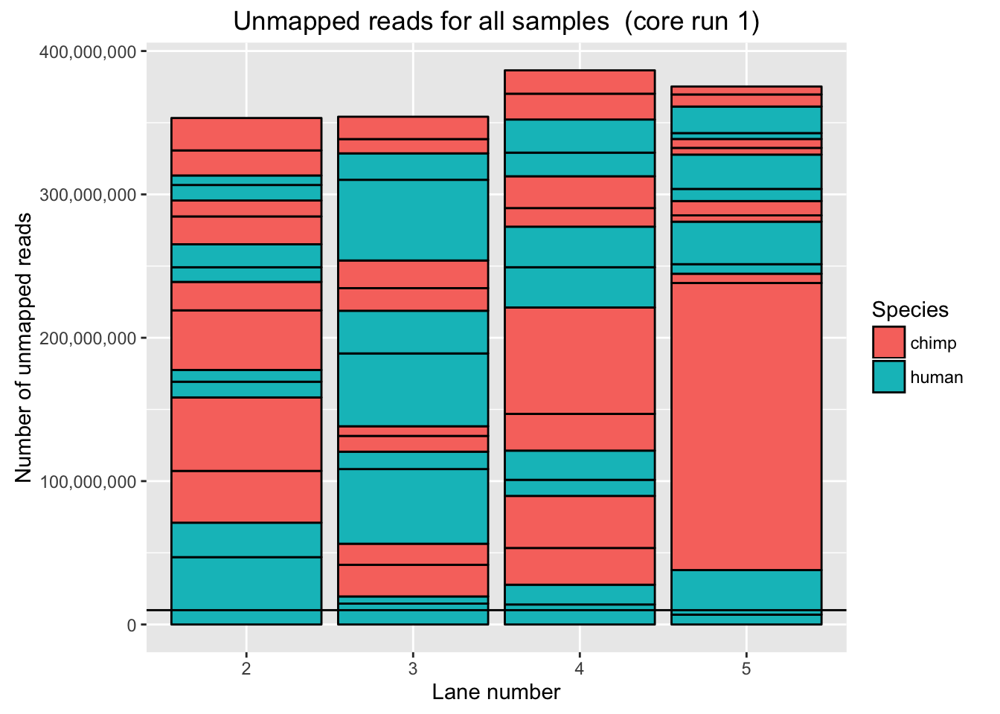
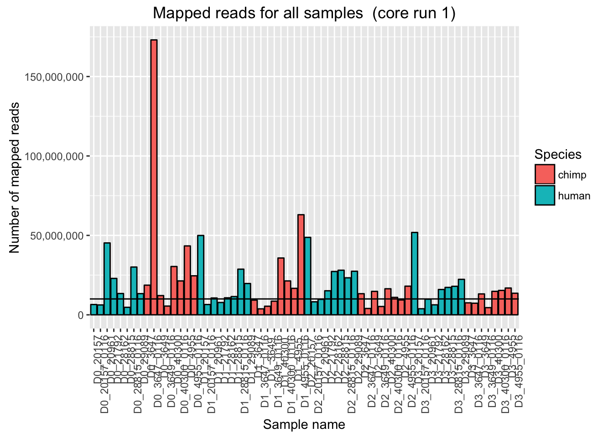

Mapped_unmapped
Lauren Blake
November 7, 2016
Introduction
The goal of this script is to process the data from the 2 core runs of our endoderm time course project. The data was sequenced on an Illumina 4000 at the University of Chicago Genomics Core Facility. There are 2 species (humans and chimps) with 6 human iPSC lines with 2 replicates and 4 chimp iPSC lines with 4 replicates. RNA was extracted from the iPSCs for each day of the differentation into endoderm for a total of 4 days.
PLOTS OF UNMAPPED AND MAPPED READS
# Sent all figures to a folder rather than ./analysis
source("~/Desktop/Endoderm_TC/ashlar-trial/analysis/chunk-options.R")## Warning: package 'knitr' was built under R version 3.2.5# Load necessary libraries
library(ggplot2)Warning: package 'ggplot2' was built under R version 3.2.4## Warning: package 'ggplot2' was built under R version 3.2.3
library(scales)Warning: package 'scales' was built under R version 3.2.3# Get data for unmapped and mapped reads
Endoderm_mapping_2_core_runs <- read.csv("~/Desktop/Endoderm_TC/ashlar-trial/data/Endoderm_mapping_2_core_runs.csv")
# Plot mapped reads per sample with a line at 10 million reads
ggplot(Endoderm_mapping_2_core_runs, aes(x = factor(Sample), y = Total_mapped, fill = Species)) + ylab("Number of mapped reads") + xlab("Sample name") + geom_bar(stat = "identity", colour = "black") + theme(axis.text.x = element_text(angle = 90, hjust = 1)) + xlab("Sample name") + ggtitle("Mapped reads for all samples (2 core runs)") + geom_hline(yintercept = 10000000) + scale_y_continuous(labels = comma)
# Plot mapped reads per sample AFTER subsampling D0_3649_0116
ggplot(Endoderm_mapping_2_core_runs, aes(x = factor(Sample), y = Total_mapped_post_subsample, fill = Species)) + ylab("Number of mapped reads") + xlab("Sample name") + geom_bar(stat = "identity", colour = "black") + theme(axis.text.x = element_text(angle = 90, hjust = 1)) + xlab("Sample name") + ggtitle("Mapped reads for all samples (2 core runs, post-subsampling)") + geom_hline(yintercept = 10000000) + scale_y_continuous(labels = comma)
# Plot mapped reads per sample for core run 1
ggplot(Endoderm_mapping_2_core_runs, aes(x = factor(Sample), y = Reads_mapped_run1, fill = Species)) + ylab("Number of mapped reads") + xlab("Sample name") + geom_bar(stat = "identity", colour = "black") + theme(axis.text.x = element_text(angle = 90, hjust = 1)) + xlab("Sample name") + ggtitle("Mapped reads for all samples (core run 1)") + geom_hline(yintercept = 10000000) + scale_y_continuous(labels = comma)
# Plot mapped reads per sample for core run 1 AFTER subsampling D0_3649_0116
ggplot(Endoderm_mapping_2_core_runs, aes(x = factor(Sample), y = Reads_mapped_post_subsample_run1, fill = Species)) + ylab("Number of mapped reads") + xlab("Sample name") + geom_bar(stat = "identity", colour = "black") + theme(axis.text.x = element_text(angle = 90, hjust = 1)) + xlab("Sample name") + ggtitle("Mapped reads for all samples (core run 1, post-subsampling)") + geom_hline(yintercept = 10000000) + scale_y_continuous(labels = comma)
# Plot mapped reads per sample for core run 2
ggplot(Endoderm_mapping_2_core_runs, aes(x = factor(Sample), y = Reads_mapped_run2, fill = Species)) + ylab("Number of mapped reads") + xlab("Sample name") + geom_bar(stat = "identity", colour = "black") + theme(axis.text.x = element_text(angle = 90, hjust = 1)) + xlab("Sample name") + ggtitle("Mapped reads for all samples (core run 2)") + geom_hline(yintercept = 10000000) + scale_y_continuous(labels = comma)
# Plot mapped reads per sample for core run 2
ggplot(Endoderm_mapping_2_core_runs, aes(x = factor(Sample), y = Reads_mapped_post_subsample_run2, fill = Species)) + ylab("Number of mapped reads") + xlab("Sample name") + geom_bar(stat = "identity", colour = "black") + theme(axis.text.x = element_text(angle = 90, hjust = 1)) + xlab("Sample name") + ggtitle("Mapped reads for all samples (core run 2, post-subsampling)") + geom_hline(yintercept = 10000000) + scale_y_continuous(labels = comma)
# Plot for unmapped reads/sample for both core runs
ggplot(Endoderm_mapping_2_core_runs, aes(x = factor(Sample), y = Total_unmapped, fill = Species)) + ylab("Number of unmapped reads") + xlab("Sample name") + geom_bar(stat = "identity", colour = "black") + theme(axis.text.x = element_text(angle = 90, hjust = 1)) + xlab("Sample name") + ggtitle("Unmapped reads for all samples (2 core runs)") + geom_hline(yintercept = 10000000) + scale_y_continuous(labels = comma)# Plot for unmapped reads/sample
ggplot(Endoderm_mapping_2_core_runs, aes(x = factor(Sample), y = Reads_unmapped_run1, fill = Species)) + ylab("Number of unmapped reads") + xlab("Sample name") + geom_bar(stat = "identity", colour = "black") + theme(axis.text.x = element_text(angle = 90, hjust = 1)) + xlab("Sample name") + ggtitle("Unmapped reads for all samples (core run 1)") + geom_hline(yintercept = 10000000) + scale_y_continuous(labels = comma)
# Plot for unmapped reads/lane in core run 1
ggplot(Endoderm_mapping_2_core_runs, aes(x = factor(Lane_run1), y = Reads_unmapped_run1, fill = Species)) + ylab("Number of unmapped reads") + xlab("Lane number") + geom_bar(stat = "identity", colour = "black") + ggtitle("Unmapped reads for all samples (core run 1)") + geom_hline(yintercept = 10000000) + scale_y_continuous(labels = comma)
# Plot for unmapped reads/sample
ggplot(Endoderm_mapping_2_core_runs, aes(x = factor(Sample), y = Reads_unmapped_run2, fill = Species)) + ylab("Number of unmapped reads") + xlab("Sample name") + geom_bar(stat = "identity", colour = "black") + theme(axis.text.x = element_text(angle = 90, hjust = 1)) + xlab("Sample name") + ggtitle("Unmapped reads for all samples (core run 2)") + geom_hline(yintercept = 10000000) + scale_y_continuous(labels = comma)# Plot for unmapped reads/lane in core run 1
ggplot(Endoderm_mapping_2_core_runs, aes(x = factor(Lane_run2), y = Reads_unmapped_run2, fill = Species)) + ylab("Number of unmapped reads") + xlab("Lane number") + geom_bar(stat = "identity", colour = "black") + ggtitle("Unmapped reads for all samples (core run 2)") + geom_hline(yintercept = 10000000) + scale_y_continuous(labels = comma)Originally, we had considered subsampling to the median.
# Originally, we had considered subsampling to the median. Find the median of the mapped reads (not including sample D0_3647_0116)
median_test <- as.data.frame(Endoderm_mapping_2_core_runs$Total_mapped)
median_run <- as.data.frame(median_test[-10,])
median(as.numeric(t(median_run)))[1] 35953173#We will subsample Sample D036470116 to the median number of reads, 35953173 reads.
#Actual number of reads in SampleD036470116 post subsampling: 35644778 reads.Given the distribution of the mapped reads, we will subsample to the second highest value.
# Plot mapped reads per sample with a line at 10 million reads
ggplot(Endoderm_mapping_2_core_runs, aes(x = factor(Sample), y = Total_mapped, fill = Species)) + ylab("Number of mapped reads") + xlab("Sample name") + geom_bar(stat = "identity", colour = "black") + theme(axis.text.x = element_text(angle = 90, hjust = 1)) + xlab("Sample name") + ggtitle("Mapped reads for all samples (2 core runs)") + geom_hline(yintercept = 10000000) + scale_y_continuous(labels = comma)
# Plot mapped reads per sample AFTER subsampling D0_3649_0116
ggplot(Endoderm_mapping_2_core_runs, aes(x = factor(Sample), y = Total_mapped_post_subsample, fill = Species)) + ylab("Number of mapped reads") + xlab("Sample name") + geom_bar(stat = "identity", colour = "black") + theme(axis.text.x = element_text(angle = 90, hjust = 1)) + xlab("Sample name") + ggtitle("Mapped reads for all samples (2 core runs, post-subsampling)") + geom_hline(yintercept = 10000000) + scale_y_continuous(labels = comma)
# Plot mapped reads per sample for core run 1
ggplot(Endoderm_mapping_2_core_runs, aes(x = factor(Sample), y = Reads_mapped_run1, fill = Species)) + ylab("Number of mapped reads") + xlab("Sample name") + geom_bar(stat = "identity", colour = "black") + theme(axis.text.x = element_text(angle = 90, hjust = 1)) + xlab("Sample name") + ggtitle("Mapped reads for all samples (core run 1)") + geom_hline(yintercept = 10000000) + scale_y_continuous(labels = comma)
# Plot mapped reads per sample for core run 1 AFTER subsampling D0_3649_0116
ggplot(Endoderm_mapping_2_core_runs, aes(x = factor(Sample), y = Reads_mapped_post_subsample_run1, fill = Species)) + ylab("Number of mapped reads") + xlab("Sample name") + geom_bar(stat = "identity", colour = "black") + theme(axis.text.x = element_text(angle = 90, hjust = 1)) + xlab("Sample name") + ggtitle("Mapped reads for all samples (core run 1, post-subsampling)") + geom_hline(yintercept = 10000000) + scale_y_continuous(labels = comma)
# Plot mapped reads per sample for core run 2
ggplot(Endoderm_mapping_2_core_runs, aes(x = factor(Sample), y = Reads_mapped_run2, fill = Species)) + ylab("Number of mapped reads") + xlab("Sample name") + geom_bar(stat = "identity", colour = "black") + theme(axis.text.x = element_text(angle = 90, hjust = 1)) + xlab("Sample name") + ggtitle("Mapped reads for all samples (core run 2)") + geom_hline(yintercept = 10000000) + scale_y_continuous(labels = comma)
# Plot mapped reads per sample for core run 2
ggplot(Endoderm_mapping_2_core_runs, aes(x = factor(Sample), y = Reads_mapped_post_subsample_run2, fill = Species)) + ylab("Number of mapped reads") + xlab("Sample name") + geom_bar(stat = "identity", colour = "black") + theme(axis.text.x = element_text(angle = 90, hjust = 1)) + xlab("Sample name") + ggtitle("Mapped reads for all samples (core run 2, post-subsampling)") + geom_hline(yintercept = 10000000) + scale_y_continuous(labels = comma)
Session Info
sessionInfo()R version 3.2.2 (2015-08-14)
Platform: x86_64-apple-darwin13.4.0 (64-bit)
Running under: OS X 10.11 (El Capitan)
locale:
[1] en_US.UTF-8/en_US.UTF-8/en_US.UTF-8/C/en_US.UTF-8/en_US.UTF-8
attached base packages:
[1] stats graphics grDevices utils datasets methods base
other attached packages:
[1] scales_0.4.0 ggplot2_2.1.0 knitr_1.15.1
loaded via a namespace (and not attached):
[1] Rcpp_0.12.7 digest_0.6.11 rprojroot_1.1 plyr_1.8.4
[5] grid_3.2.2 gtable_0.2.0 backports_1.0.4 magrittr_1.5
[9] evaluate_0.10 stringi_1.1.2 rmarkdown_1.3 labeling_0.3
[13] tools_3.2.2 stringr_1.1.0 munsell_0.4.3 yaml_2.1.14
[17] colorspace_1.2-7 htmltools_0.3.5